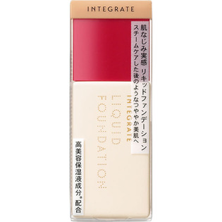
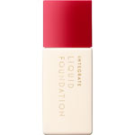

返回列表
产品名称：インテグレート リアルフィットリキッド オークル30

資生堂 インテグレート リアルフィットリキッド オークル30 ＯＣ３０
メーカー 資生堂
JANコード 4901872023783
商品の特徴
肌なじみ実感
スチームケアした後のようなつややか美肌へ
高美容保湿液成分配合
成分・分量
-
用法及び用量
＜使用方法＞
●よく振ってからお使いください。
●スキンケアで肌を整えた後、手のひらに適量をとり、顔全体になじませます。洗顔後、直接本品をお使いいただいてもスキンケア効果が得られます。
●使用量が少ないと、十分な紫外線防御効果が得られません。